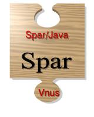

Spar - project summary
Description
Spar is a programming language for semi-automatic parallel
programming, in particular for the programming of array-based
applications. The language has been designed as part of
the Automap project, in
which a compiler and run-time system are being developed for
distributed-memory systems. As suggested by its name, the goal of Automap is completely automatic code
and data mapping at either compile-time or run-time. This relieves
the programmer of a difficult task, and makes Spar programs completely
portable.
Apart from a few minor modifications, Spar is a superset of Java.
This provides Spar with a modern, solid, language as basis, and makes
Spar more accessible. Spar extends Java with constructs for parallel
programming, extensive support for array manipulation, and a number of
other powerful language extensions.
Further information
For further information, see the following pages:
| Overview |
People
Henk J. Sips (Project leader)
Arjan J.C. van Gemund (Senior researcher, Advise on task mapping and language design)
Hai Xian Lin (Senior researcher, Advise on numerical programming)
Kees van Reeuwijk (Compiler)
Frits Kuijlman (Runtime library)
Publications
The Spar language specification has not been formally published, but it is
available for download:
 spar-langspec-2.0.pdf, Acrobat document (435K)
spar-langspec-2.0.pdf, Acrobat document (435K)
Further publications related to Spar are listed
in the PDS publication database.
Last modified Wed Dec 17 18:29:56 2003 UT by
Kees van Reeuwijk.